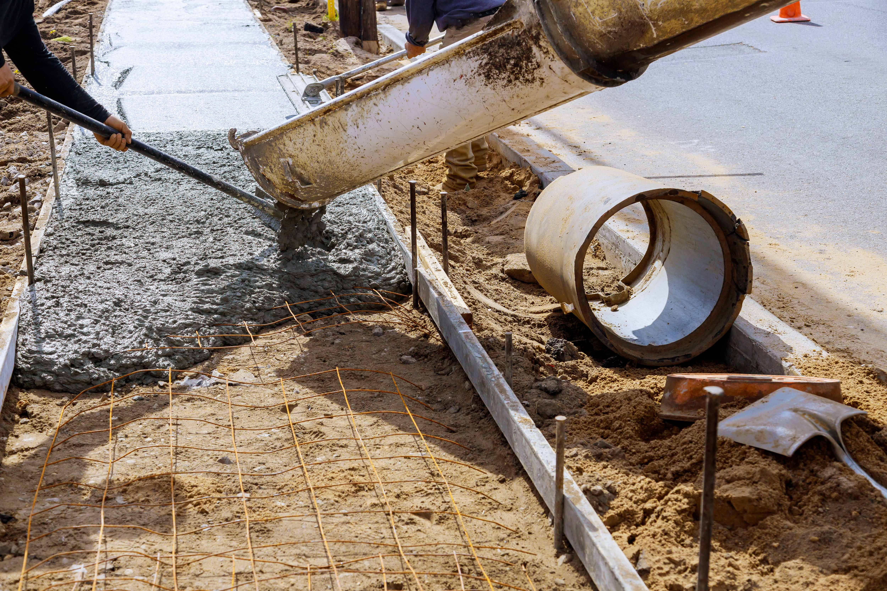
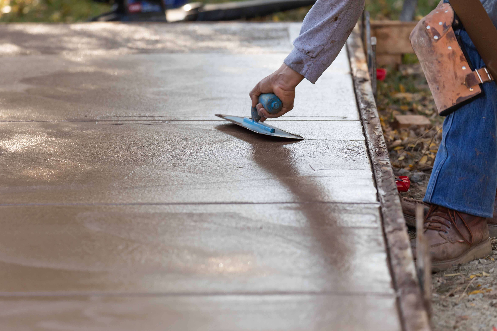
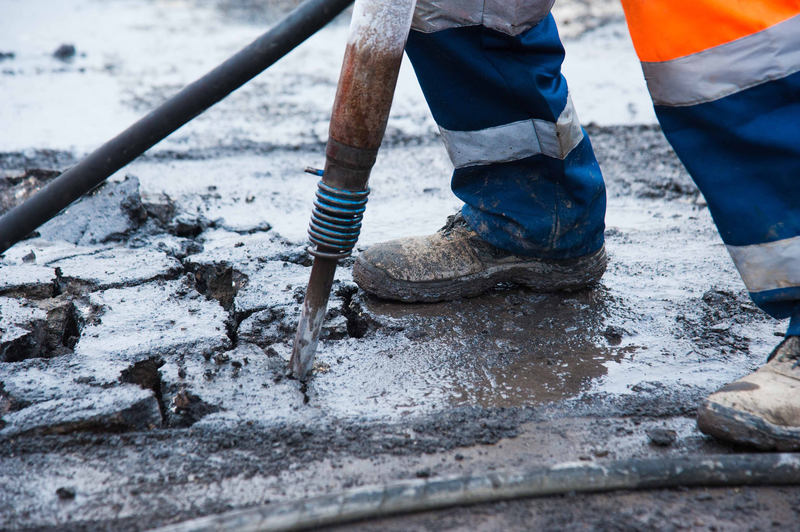
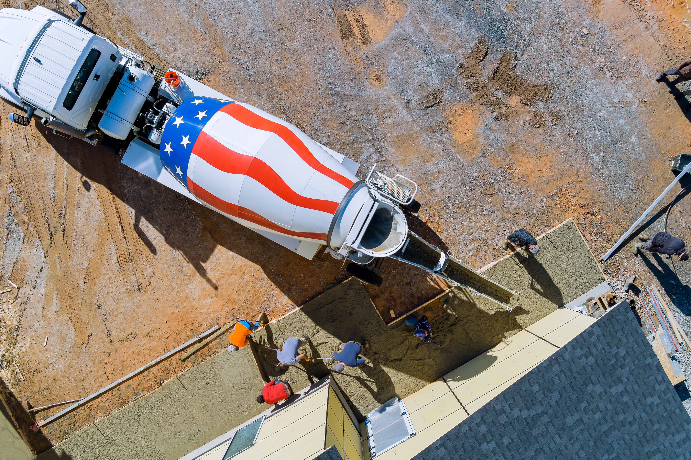
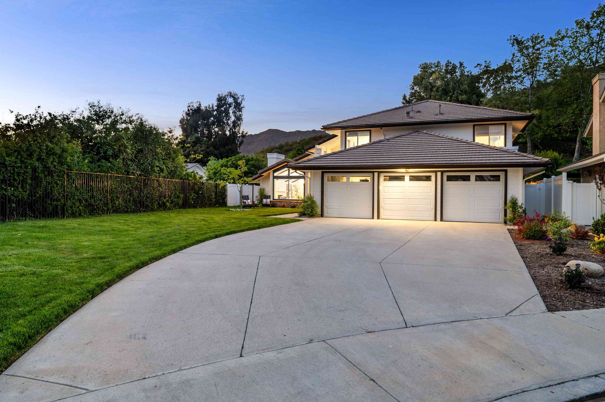

Your Biloxi concrete contractor.
Built right. Built on time.
Built for Mississippi.
See Our Work
Built With Care
What We Do
Concrete Work Built to Last.
Professional Concrete Solutions combines skilled concrete finishing, durable materials, clear communication, and reliable crews for residential and commercial projects across the Mississippi Gulf Coast.
Near 5-Star Reputation4.9/5
★★★★★
Near 5-star reputation across the Mississippi Gulf Coast
A trusted local choice for concrete built to endure.
From Gulf Coast humidity and heavy rainfall to shifting South Mississippi soil, we plan and build concrete projects for local conditions—not generic conditions.
Clear updates from the first walkthrough and estimate through scheduling, pouring, finishing, and final cleanup.
4.9/5
Near 5-Star Reputation
A near 5-star local reputation built on skilled workmanship, reliable crews, and professional job-site care.
10+
Years of Experience
Local concrete knowledge applied to driveways, patios, slabs, foundations, walkways, repairs, and commercial projects.
Our Process
A stronger project in four clear steps.
Our process keeps your concrete project organized from the first property walkthrough through preparation, placement, finishing, cleanup, and final review.
Step One
Property Walkthrough & Consultation
We review your property, project goals, drainage, access, dimensions, intended use, preferred finish, timeline, and budget.
01Step Two
Scope, Pricing & Scheduling
We define the project scope, preparation requirements, reinforcement, grading, materials, pricing, and expected schedule.
02Step Three
Preparation, Pouring & Finishing
Our crew prepares the site, forms and reinforces the area, places the concrete, and completes the agreed finish with care.
03Step Four
Final Review & Curing Guidance
We inspect the finished work, clean the job site, explain curing timelines, and answer questions about use and maintenance.
04
Services Snapshot
Concrete services built for Mississippi homes and businesses.
Our work is designed for South Mississippi humidity, rainfall, storm cycles, and soil movement. We use skilled crews, quality materials, proper preparation, and honest communication to deliver dependable results.

Most Requested
Driveways & Driveway Extensions
New concrete driveways, replacements, and extensions built with proper preparation, grading, reinforcement, and durable finishing.
New Driveways
Driveway Extensions
Replacement

Outdoor Living
Concrete Patios & Outdoor Spaces
Durable patios and outdoor concrete surfaces designed for entertaining, everyday use, drainage, and Gulf Coast weather.

Structural & Flatwork
Slabs, Foundations, Sidewalks & Steps
Concrete foundations, slabs, walkways, sidewalks, and steps built for residential and commercial use.

Additional Services
Concrete Repair, Resurfacing & Commercial Work
We assess cracked, sinking, worn, or damaged concrete and recommend repair, resurfacing, replacement, or a commercial concrete solution.
Local concrete work for Biloxi and the Mississippi Gulf Coast.
Professional Concrete Solutions is a Biloxi concrete contractor serving homeowners, businesses, property managers, and builders across South Mississippi. Our work includes concrete driveways and driveway extensions, patios, sidewalks, walkways, steps, slabs, foundations, repairs, resurfacing, and commercial flatwork.
Every property presents a different combination of use, access, drainage, grade, existing concrete, and soil conditions. We begin with the site and the purpose of the project, then define the preparation, layout, reinforcement, finish, schedule, and curing plan that fit the work. That project-first approach gives clients a clearer path from the initial walkthrough to the final review.
01 / Driveways
Concrete driveways, replacements, and extensions
A driveway must do more than create curb appeal. It needs to support the expected traffic, meet surrounding surfaces cleanly, and move rainwater in a sensible direction. We plan new concrete driveways, replacement driveways, parking pads, and extensions around the property layout, vehicle use, access, grade, preparation, and finish.
Outdoor concrete should make the property easier to use. Patios can create space for dining, grilling, seating, and gatherings, while walkways and steps connect the home, driveway, yard, and other features. We consider dimensions, furniture, drainage, transitions, texture, and everyday traffic before the layout is finalized.
Concrete slabs, foundations, and commercial flatwork
Slabs and foundations depend on the intended structure or equipment, site preparation, dimensions, elevations, access, and project requirements. For businesses and managed properties, we also plan practical concrete areas around traffic flow, loading, pedestrian movement, drainage, scheduling, and disruption to normal operations.
Cracks, settlement, worn surfaces, broken edges, and standing water do not all require the same answer. We review the damage, current use, surrounding concrete, drainage, and signs of movement before recommending repair, resurfacing, partial replacement, or a new pour. The goal is a practical scope based on the condition we find.
Concrete solutions designed for
durability, clarity, and local conditions.
Our reputation is built on reliable crews, skilled finishing,
honest pricing, clear communication, and work designed for South Mississippi.
Near 5-star local reputation
Review count should be verified before publishing
Driveway Expertise
Professional Concrete Solutions
★★★★★
Driveways and extensions are prepared, graded, reinforced, poured, and finished for dependable everyday use.
Concrete Service Standard
Mississippi-Ready Work
Professional Concrete Solutions
★★★★★
Concrete is planned for Gulf Coast humidity, heavy rainfall, storm cycles, and shifting South Mississippi soil.
Concrete Service Standard
Patios & Outdoor Spaces
Professional Concrete Solutions
★★★★★
Outdoor concrete is built with careful layout, drainage, finishing, and long-term usability in mind.
Concrete Service Standard
Honest Project Guidance
Professional Concrete Solutions
★★★★★
Clients receive clear recommendations on whether a surface should be repaired, resurfaced, replaced, or newly poured.
Concrete Service Standard
Foundations & Slabs
Professional Concrete Solutions
★★★★★
Residential and light commercial slabs and foundations are completed with careful preparation and durable materials.
Concrete Service Standard
Clear, Upfront Pricing
Professional Concrete Solutions
★★★★★
Project scope, pricing, preparation, and scheduling are explained before work begins—without unnecessary confusion.
Concrete Service Standard
Concrete Repair
Professional Concrete Solutions
★★★★★
Cracking, sinking, wear, and surface damage are assessed before the right repair or replacement method is recommended.
Concrete Service Standard
Reliable Crews
Professional Concrete Solutions
★★★★★
Professional crews are expected to arrive prepared, communicate clearly, protect the work area, and complete the agreed scope.
Concrete Service Standard
Commercial Concrete
Professional Concrete Solutions
★★★★★
Concrete solutions are available for businesses, commercial properties, walkways, slabs, and other functional surfaces.
Concrete Service Standard
Clean Final Results
Professional Concrete Solutions
★★★★★
Every project includes finishing details, job-site cleanup, a final review, and practical curing guidance.
Concrete Service Standard
Concrete Planning Guides
Helpful answers before your project begins.
Use these local guides to plan the layout, understand site considerations, compare repair options, and prepare for a clearer conversation with your concrete contractor.

Concrete Driveway Contractor | Biloxi, MS
Concrete Driveway Contractor in Biloxi, MS
Professional Concrete Solutions builds new driveways and replacement driveways around Gulf Coast drainage, daily vehicle use, property access, site preparation, and the finished look you want.
Professional Concrete Solutions plans driveway extensions for added parking, wider access, boats, trailers, work vehicles, and better use of Gulf Coast properties.
Professional Concrete Solutions plans and builds concrete patios around the property, the people using it, and the way rainwater moves through the yard.
Professional Concrete Solutions installs and replaces concrete sidewalks and walkways for homes, businesses, managed properties, and outdoor spaces across the Mississippi Gulf Coast.
Professional Concrete Solutions evaluates cracked, sinking, uneven, and worn concrete to determine whether repair, resurfacing, partial replacement, or a new pour is the practical path.
Professional Concrete Solutions plans commercial concrete work around property use, traffic, drainage, access, scheduling, safety, and the need to limit disruption.
Clear answers before your concrete project begins.
Understanding timelines, curing, repair options, site preparation, and local conditions makes it easier to plan a successful concrete project.
Pricing, scheduling, preparation, reinforcement, finish options, curing requirements, and availability depend on the final scope, location, site conditions, and written agreement.
We provide driveways and driveway extensions, patios and outdoor living surfaces, foundations and slabs, sidewalks, walkways, steps, concrete repair, resurfacing, and commercial concrete construction.
Yes. We assess cracked, sinking, worn, or damaged concrete and recommend the most practical solution: repair, resurfacing, replacement, or a new pour.
Many residential driveways, patios, and sidewalks can be completed in approximately one to three working days, depending on size, preparation, access, weather, and site conditions. Larger slabs and commercial work may require more time.
Walking is commonly allowed after approximately 24 to 48 hours. Vehicle traffic should generally wait at least seven days. Concrete continues curing and typically reaches its design strength around 28 days.
We account for South Mississippi humidity, rainfall, soil movement, drainage, and storm cycles through proper preparation, grading, reinforcement, expansion joints, mixing, placement, and finishing.
We serve the Mississippi Gulf Coast, including Biloxi, Gulfport, Ocean Springs, Pascagoula, Bay St. Louis, and surrounding South Mississippi communities.
Yes. We review the property and proposed work, explain the recommended approach, and provide clear project scope and pricing before construction begins.
Yes. We build driveway extensions and replacements, with preparation and finishing planned to create a durable transition and functional driving surface.
Yes. Professional Concrete Solutions serves homeowners, businesses, and commercial properties with concrete work matched to the project's intended use and site requirements.
Provide the project address, type of concrete work, approximate dimensions, photos, intended use, preferred timeline, and any known access, drainage, cracking, or soil concerns.